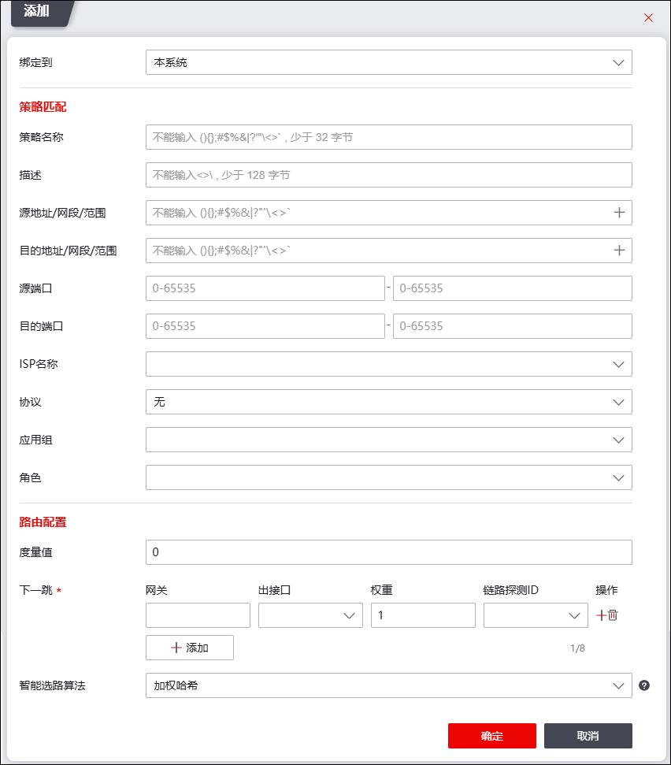

策略路由可针对具体的应用流量进行选路，能根据源地址和源端口、目的地址和目的端口、ISP名称、协议、角色等参数来确定报文的转发路径，可使不同类型的流量分别走不同的链路，达到保证类应用走优质链路，非保证类应用走另外链路的目的。此外，策略路由还可根据其智能选路算法实现多链路的负载均衡和链路备份。
NGFW的策略路由可与入接口绑定（入接口即接收报文的接口），绑定了入接口的策路路由优先级高于没有绑定入接口的策略路由。当一条没有在本设备上建立会话的数据流到来时，会进入路由流程进行选路，策略路由查找过程如下：
①如果入接口绑定了策略路由，报文将匹配绑定了该入接口的策略路由的各个路由项，匹配成功则根据策略路由规则转发报文；匹配失败，则匹配当前系统中的没有绑定入接口的策略路由。
②如果入接口没有绑定策略路由，匹配当前系统中的没有绑定入接口的策略路由。
如果匹配的策略路由项中包含多条nexthop信息，则使用metric优先级最高的一条，如果优先级最高的nexthop有多条，则基于策略路由的多径选路算法选择nexthop。
本节介绍策略路由的相关配置：包括策略路由的添加、删除、清空操作，以及通过移动来改变策略路由中路由条目的默认排列顺序。
| 步骤1 | 选择 。 |
| 步骤2 | 点击『添加』，打开“添加”对话框。如下图所示。 |

在添加策略路由时，各项参数的具体说明如下表所示。
参数 |
说明 |
|---|---|
绑定到 |
绑定策略路由的入接口。 说明： 绑定了入接口的策路路由优先级高于没有绑定入接口的策略路由。绑定了入接口的策略路由只能用于从该接口进入NGFW的报文进行路由选路。没有绑定入接口的策略路由可用于从NGFW任意接口进入的报文进行路由选路。 |
策略名称 |
设置策略路由的名称。 |
源地址/网段/范围 |
用来标识IP包的源地址或源网络。注意填写源地址转换前的IP及掩码，也就是真实的子网地址。 |
目的地址/网段/范围 |
用来标识IP包的目的地址或目的网络。需要填写目的地址转换后的真实地址。 |
源端口 |
标识数据包的源端口的范围。如果为单个端口，则只填写起始端口即可；默认为所有端口。端口范围为0-65535。 |
目的端口 |
标识数据包的目的端口的范围，如果为单个端口，则只填写起始端口即可；默认为所有端口。端口范围为0-65535。 |
ISP名称 |
通过下拉框选择数据包匹配的ISP协议。 说明： 策略路由同时指定了“目的地址”和ISP运营商时，数据流的目的地址需要匹配两者的交集才能使用该策略路由，可实现允许部分流量访问ISP运营商的功能。 |
协议 |
通过下拉框选择数据包匹配的协议。 |
应用组 |
通过下拉框选择应用组。 |
角色 |
通过下拉框选择角色。 |
度量值 |
设置策略路由的优先级，值越小，优先级越高。取值范围0-256。 说明：存在两条及以上到相同目的网络但优先级不同的策略路由时，优先级高的策略路由将成为当前的最优路由。 |
下一跳 |
指定数据报文转发报文的网关、出接口、权重、链路探测ID。 Ø网关：该路由的网关地址，通常为下一跳路由器的入口IP地址。 Ø出接口：数据报文从NGFW转发到别的设备的出接口。 Ø权重：设置该策略路由的权重值。取值范围为1-256。当到达同一个网络的多条策略路由度量值相同时，“智能选路算法”参数选择加权哈希、最小带宽利用率或者加权轮询，权重值影响选路。1）加权哈希算法：按照权重进行哈希选路；2）最小带宽利用率：与实时的接口带宽速率和权重都有关，根据接口是否设置带宽阈值决定是否使用此接口进行转发，否则使用加权哈希算法进行选路；3）加权轮询算法：按照权重进行均衡的选路。 Ø链路探测ID：设置路由使用的链路探测规则的ID，关于链路探测的配置具体请参见 链路探测。 |
智能选路算法 |
选择智能选路算法。可选项：加权哈希、最小带宽利用率、TTL最大优先、最小延迟优先、加权轮询。 |
| 步骤3 | 点击【确定】按钮完成策略路由的创建。 |